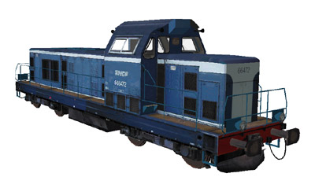
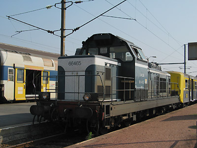
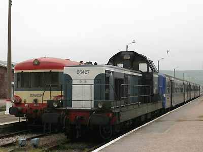
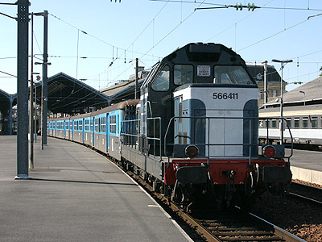
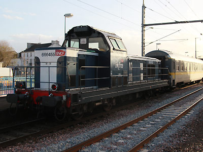
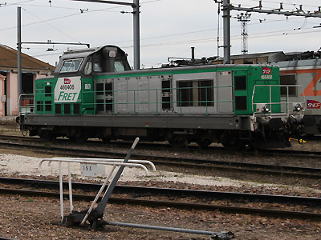
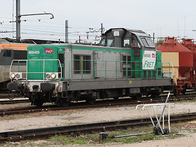
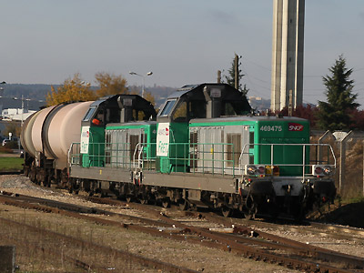
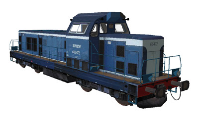

La BB 66400 version 
E. Staniczek a réalisé la BB 66472.
Ferrovia - 19 Septembre 2012
BB 66400 - 69400
Tout comme les BB 67300 ont succédé aux BB 67000, les BB 66400 sont une évolution des BB 66000 et possèdent le même moteur MGO à 16 cylindres. Mais la génératrice à courant continu cède sa place à un alternateur triphasé.
Les BB 66400 permettent le chauffage électrique des trains voyageurs. Certaines étaient aptes à la réversibilité tout d'abord avec des anciennes rames voyageurs Talbot puis avec des rames inox RIO ou RRR.
Elles ont été construites de 1968 à 1971 à 106 exemplaires.
La remotorisation des BB 66400 donne les BB 69400. Le rang de la machine dans la série restant le même.
Quelques données techniques
Constructeurs : Alstom, Compagnie des forges de la Loire, Compagnie Electromécanique, SACM
Moteur thermique :
BB 66400 : SACM MGO V16 BSHR (à 16 cylindres) accouplé à un alternateur triphasé W84-12 de 1200 kW.
BB 69400 : MTU 12V 4000 R41
Moteurs électriques : un moteur TA 648 H2 ou H3 à ventilation forcée, suspendu par le nez par essieu.
Aptitude à l'UM
Pour plus d'info :
Les fiches BB 66400 et BB 69400 sur Wikipedia
Fiche technique des BB 66400 de Florent Brisou
L'inventaire des BB 66400 et BB 69400 sur Trains du Sud-Ouest

La BB 66465 à Béthune attelée à une RRR Nord-Pas de Calais (19/09/2003)

La BB 66467 au Tréport attelée à une RRR Picardie. Elle est désormais préservée par l'Agrivap (14/05/2006)

La BB 66411 à Charleville-Mézières attelée à une RIO Champagne-Ardennes (18/09/2004)

La BB 66455 "Infra" passe à Ancenis attelée à la voiture "Véronique" (31/03/2015)

La BB 66408 Fret à Dijon (12/11/2012)

La BB 69489 remotorisée à Dijon (12/11/2012)

Les BB 69475 et 69426 achèvent la livraison d'un train d'hydrocarbures dans la banlieue Dijonnaise (13/11/2012)
La BB 66400 version 
E. Staniczek a réalisé la BB 66472.
